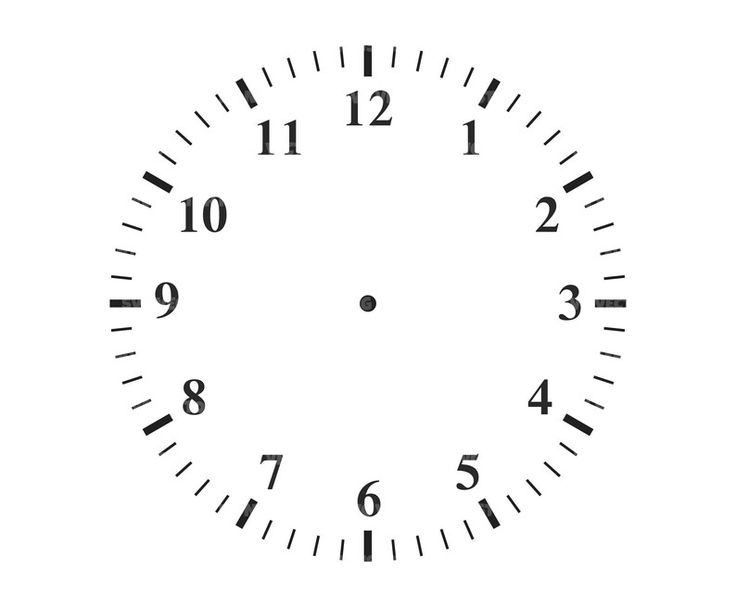

Pomodoro
Pomodoro: divida seu estudo em ciclos! Concentre-se totalmente durante 25 minutos, e depois tire uma pausa.
*A cada 4 ciclos, uma pausa longa!
Ciclo atual > 3°
Pomodoro: divida seu estudo em ciclos! Concentre-se totalmente durante 25 minutos, e depois tire uma pausa.